Aj'ji
Aj'ji is a minor nation in the Ixil Isles consisting primarily of Tabaxi, and is represented by the page of pentacles in the game of cards. Aj'ji was
broken from Che during the Tabaxi concord in the Torchwood Age.
Blazon: Purpure, above a fess Or, three fish argent; in base, a fish argent (displayed here because of HTML rendering issues)
